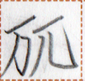

【琴】
lia1
【琴】
lia1

variants / 异体字 / 異体字
- 【箏】
occurrences / 出现次数 / 出現回数 : 10
Show all occurrences / 显示所有例句 / 全ての出現例を表示
汝無心善大声笛琴即闇時勿行彼之家。
mua2 mun1 hia1 kait ma1 cuop2 lok1 lia1 hem huet kak nau mok1 zap2 a mut2.
If you don't like loud music, don't go to his house at night. / 如果你不喜欢大声的音乐，就不要在晚上去他家。
善琴之糸極大銭。
The strings of a good stringed instrument are expensive. / 一把好的弦乐器的琴弦是昂贵的。
汝識笛琴之人何時来此処？
mua2 can2 lok1 lia1 a cuk2 nan2 kak sak2 ka1 hue?
Do you know when the musician will come here? / 你知道音乐家什么时候来这儿吗？
Words containing this character / 包含这个磷字的词语 / この燐字を含む語 :
| lia1 | 琴 | name | Lia (name) | ||
| lok1 lia1 | 笛琴 | noun | music | ||
| lia1 | 琴 | noun | stringed instrument |